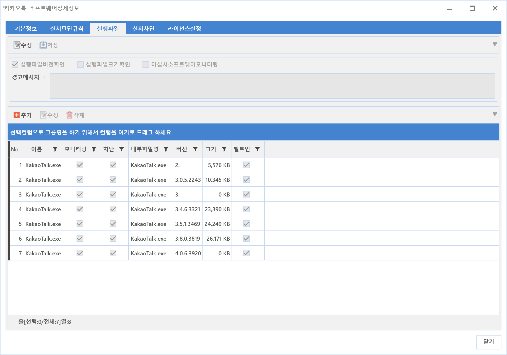
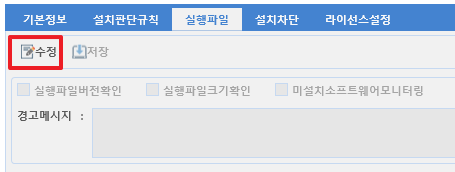
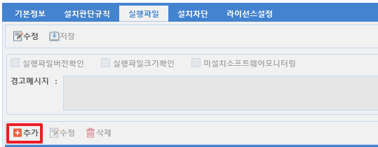
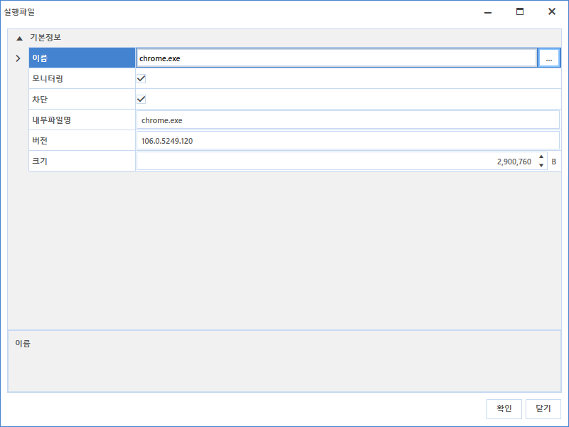
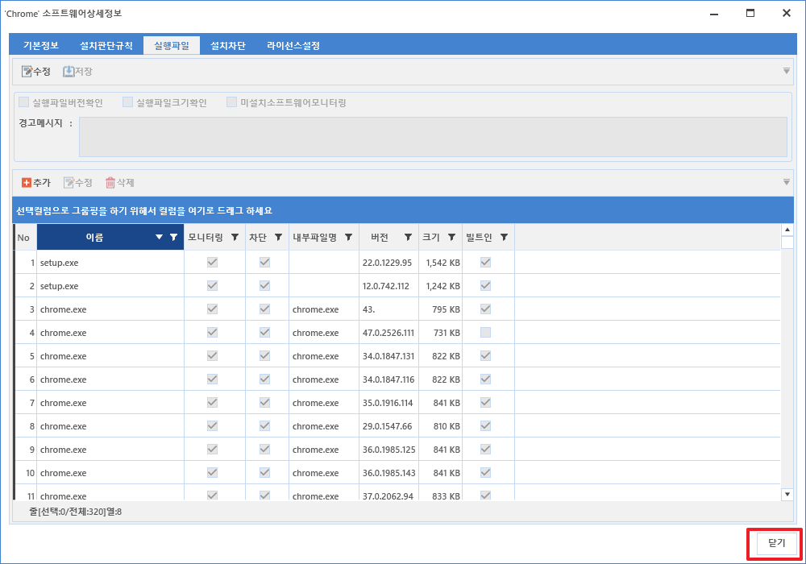
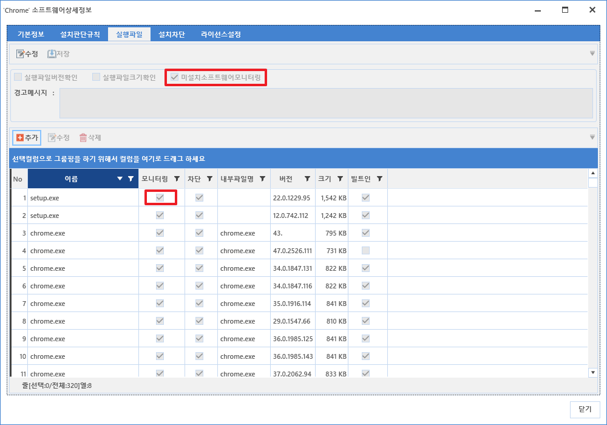

5-1-2-3. 실행 파일
5-1-2-3. 실행 파일
Source: https://www.sweeper.or.kr/etc/manual/5-1-2-3.html
5-1-2-3. 실행 파일
5. 소프트웨어 ›› 5-1. 자산관리 ›› 5-1-2. SWDB ››


실행파일 설정은 등록된 파일을 기준으로 모니터링과 차단을 하기 위한 설정입니다.

-
설명
-
실행파일버전 확인
-
모니터링이나 실행차단시, 등록한 파일의 버전을 체크할 것인지 여부를 선택합니다.
-
실행파일크기 확인
-
모니터링이나 실행차단시, 등록한 파일의 크기를 체크할 것인지 여부를 선택합니다.
-
미설치 소프트웨어 모니터링
-
"5-1-2-2. 설치 판단 규칙"과 부합하지 않더라도, 등록한 파일을 모니터링 할 것인지 여부를 선택합니다.
- 이 때는 반드시 "5-1-2-1. 기본정보 에서 모니터링"에 체크되어 있어야 합니다.
설정방법
- 수정 버튼을 클릭합니다.

-
실행파일 버전확인여부 / 실행파일 크기확인 / 미설치소프트웨어모니터링 에 체크 여부를 설정을 합니다.
-
체크 여부에 따라 파일의 버전이나 크기를 확인하여 실행차단이나 모니터링시 참고하게 됩니다.
-
경고 메시지를 등록합니다.
-
차단메시지의 내에 표시되는 내용을 직접 입력할 수 있습니다.
-
추가 버튼을 클릭하여 실행파일을 등록합니다.

- 모니터링 여부, 차단 여부 중 필요한 설정에 체크합니다.

- 등록이 완료되면 닫기 버튼을 클릭합니다.

주의사항
- (중요) 모니터링 혹은 실행파일 등록시에는 "모니터링" 혹은 "미설치소프트웨어모니터링"에 체크 되어야 5-2-3. 실행현황에서 해당 소프트웨어 실행정보를 확인할 수 있습니다.
- "모니터링"에 체크를 설정하기 위해서는 5-1-2-1. 기본정보 를 참고하시기 바랍니다.

© Copyright SWeeper Inc.. All Rights Reserved